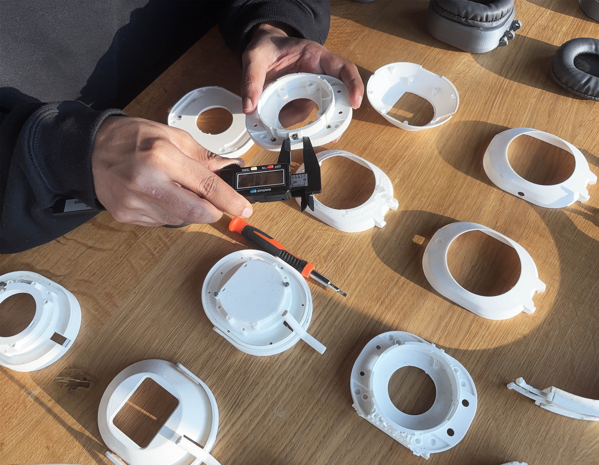
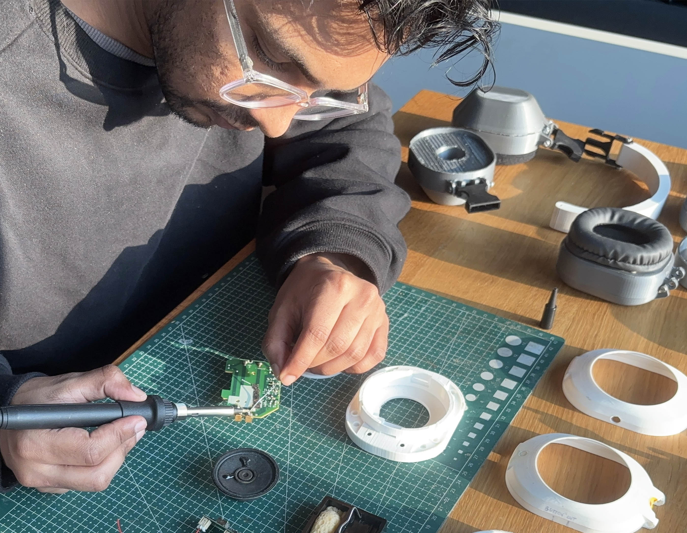
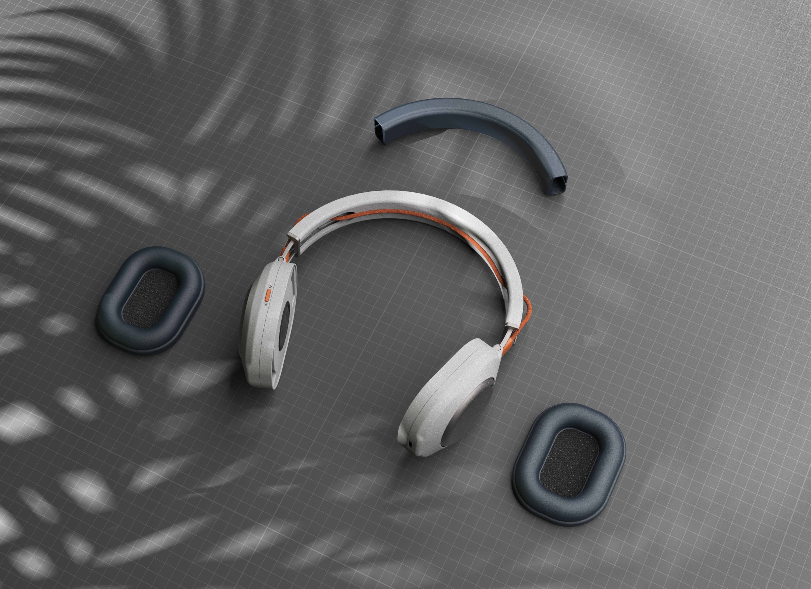
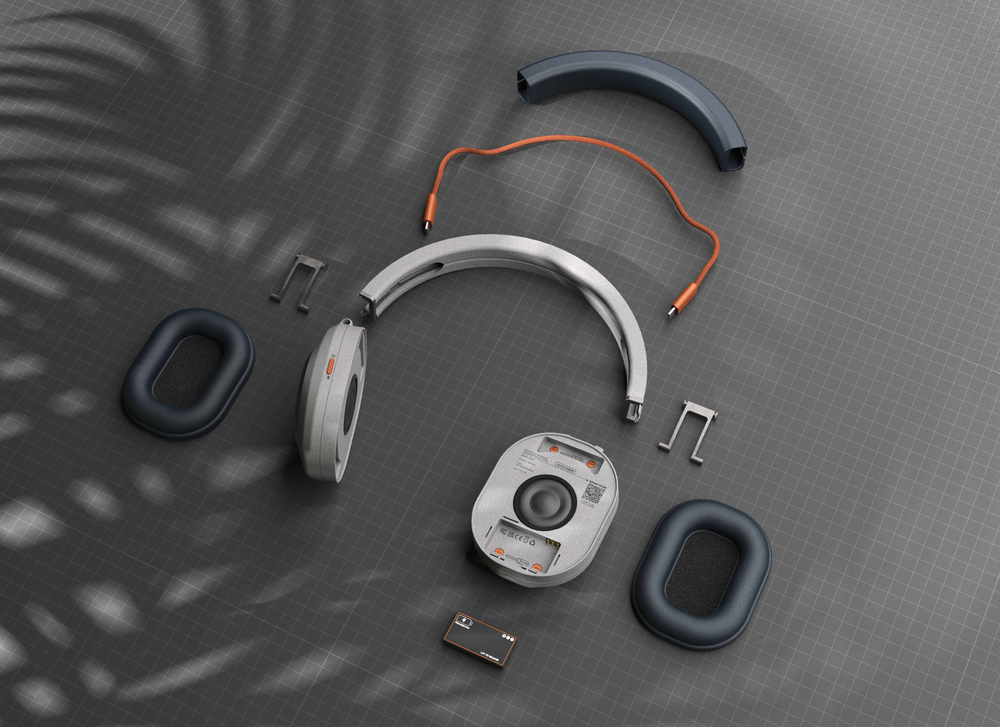
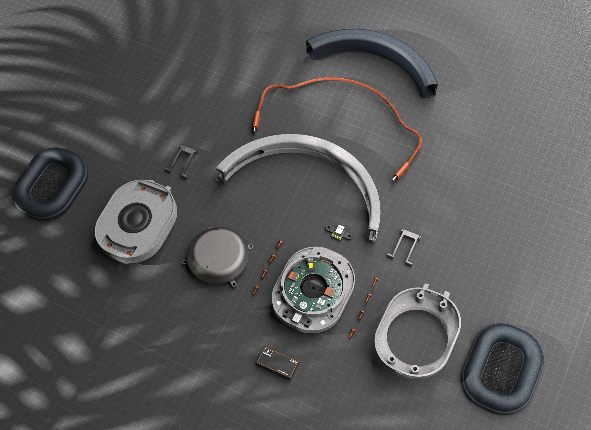
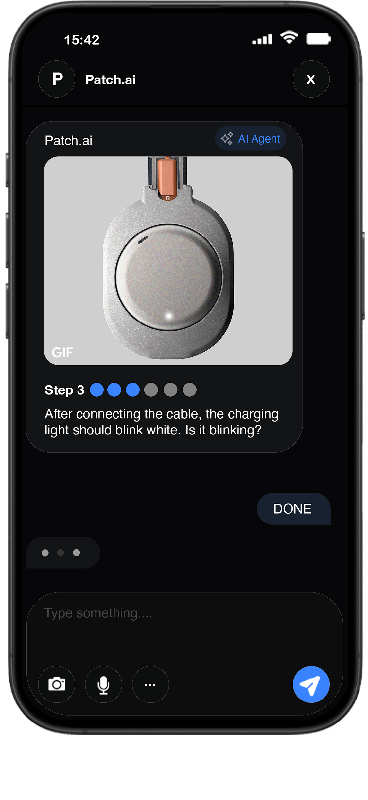

Patch Audio reimagines repair as an intuitive, guided experience rather than a daunting task. Blending a modular, easy-to-fix headphone with an AI-powered assistant, it helps users diagnose issues and navigate repairs through clear, adaptive guidance. By turning uncertainty into understanding, it builds confidence, empowers users to take action, and extends the life of everyday electronics.


A repairable headphone that reduces reliance on service centres by enabling users to diagnose and repair issues themselves through a modular design, AI-guided support, and minimal tools.






Patch was designed using a tier-based accessibility system, where component placement was determined by function criticality and lifespan. Tier 1 and Tier 2 components could be accessed without tools due to their critical functions and shorter lifespans, while Tier 3 components were less accessible as they had longer lifespans and required less frequent replacement.




The headphone itself acts as a diagnostic tool, allowing users to isolate and test potential faults through simple physical interactions. The idea is to create a more intuitive and accessible repair experience, where the AI bot guides users through simple actions such as plugging and unplugging cables from the headphone’s charging and audio ports, while providing confirmation cues to help isolate faults. By combining guided troubleshooting with interchangeable components, the system aims to help users narrow down potential issues using a simple and hands on learning approach.

Audio failure and charging failure are among the most common yet difficult-to-diagnose issues in headphones. To address this, the concept proposes two identical USB-C ports with interchangeable functionality for both audio and charging. By allowing either port and cable to perform both functions, users can isolate faults through simple cross-checking methods, making it easier to identify whether the issue lies in the port, cable, or internal circuitry.


Guides users through a hands-on troubleshooting process using audio, image, and video inputs. It actively works with users to diagnose complex or non-obvious issues such as charging faults or audio problems, creating a “learn while repairing” experience.
Provides direct links to compatible spare parts and repair tools, while also redirecting users to professional repair services for advanced or high-risk issues.


Delivers conversational repair instructions with real-time clarification and adaptive support. When text instructions are not fully understood, the bot supplements guidance with visual and video demonstrations to simplify difficult repair steps.
Operates across familiar platforms such as Instagram, WhatsApp, Signal, and Messenger, making repair support easily accessible without requiring a dedicated app or navigating complex forums and FAQs.
